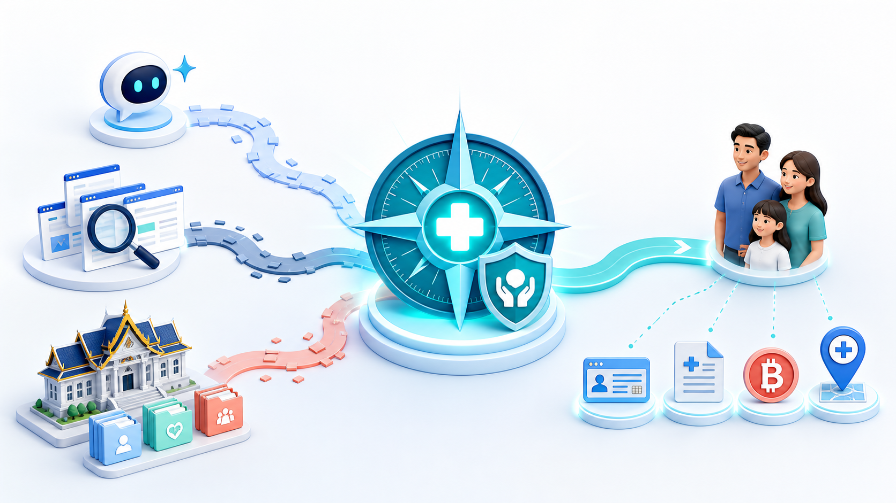

แพลตฟอร์มประเมินสิทธิสุขภาพของไทย
ที่รวมกฎ สิทธิ สถานพยาบาล และคำแนะนำจาก AI
ผู้ใช้ต้องรู้ต่อว่าใช้สิทธิที่ไหน ครอบคลุมอะไร ต้องเตรียมเอกสารใด และมีค่าใช้จ่ายส่วนเกินหรือไม่
บัตรทอง ประกันสังคม ข้าราชการ คนพิการ และประกันเอกชนมีเงื่อนไขต่างกัน
ผู้ใช้เห็นกฎ แต่ยังไม่รู้ว่ากฎนั้นตรงกับสถานการณ์ของตนอย่างไร
เครือข่ายโรงพยาบาลและบริการนอกเงื่อนไขทำให้ค่าใช้จ่ายจริงต่างกัน
เลขบัตรประชาชน ชื่อ และตำแหน่งถูกใช้เท่าที่จำเป็นต่อการประเมิน
รวมสถานะสิทธิ อาชีพ จังหวัด ภาวะสุขภาพ และกรมธรรม์ที่เกี่ยวข้อง
Rules Engine, ข้อมูลโรงพยาบาล และ AI/RAG ประเมินความคุ้มครอง
แสดงสิทธิหลัก สิทธิเสริม ค่าใช้จ่าย เอกสาร และขั้นตอนใช้งาน
อาชีพ สิทธิปัจจุบัน ผู้ประกันตน หรือสวัสดิการข้าราชการ
ความเร่งด่วน โรคเรื้อรัง และระดับการช่วยเหลือตนเอง
บัตรคนพิการ ข้อจำกัดการเคลื่อนไหว และกายอุปกรณ์
จังหวัด ตำแหน่งปัจจุบัน และภาพเอกสารทางการแพทย์
จับคู่บัตรทอง ประกันสังคม ข้าราชการ UCEP สิทธิผู้สูงอายุ และคนพิการ
ค้นหาโรงพยาบาลตามจังหวัด สิทธิที่รองรับ และเงื่อนไขร่วมจ่าย
Semantic Search ดึงคู่มือ นโยบาย และข้อมูลสิทธิที่ตรงกับคำถาม
LLM อธิบายผลเป็นภาษาง่าย พร้อมเหตุผล เอกสาร และขั้นตอนถัดไป
ใช้บริการตามชุดสิทธิประโยชน์และหน่วยบริการในระบบหลักประกันสุขภาพแห่งชาติ
ยืนยันหน่วยบริการประจำก่อนรับบริการ และเตรียมบัตรประชาชน
แยกสิทธิที่ใช้รักษาและสิทธิช่วยเหลือเพิ่มเติม
อิงเครือข่ายโรงพยาบาลและเงื่อนไขร่วมจ่าย
เอกสาร ช่องทางติดต่อ และลำดับขั้นตอนถัดไป
ใช้ตำแหน่งหรือจังหวัดเพื่อช่วยคัดเลือกเครือข่าย
ดึงข้อมูลจากใบรับรองแพทย์ ใบเสร็จ หรือเอกสารสิทธิ
แยกสถานพยาบาล วันที่ การวินิจฉัย และความต้องการด้านอุปกรณ์
ใช้ FAISS/Vector Search ดึงเนื้อหาจากฐานนโยบายและคู่มือของระบบ
สรุปความหมาย ข้อจำกัด และสิ่งที่ควรถามหน่วยงานเพิ่มเติม
Mobile-first, ถ่ายภาพเอกสาร, แบบประเมิน และหน้าผลลัพธ์
API Gateway, Eligibility Engine, PDPA Masking และบันทึกผล
OCR/Vision, RAG, Semantic Search, LLM และ Cost Engine
สิทธิ ค่าใช้จ่าย เครือข่าย เอกสาร และคำแนะนำถัดไป
